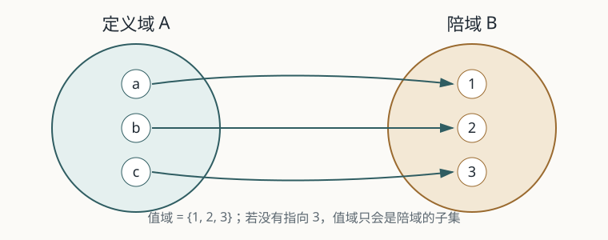

映射与函数
函数不是一条漂亮的公式，而是对“每一个允许输入”作出“唯一输出”承诺的规则。公式只是表达规则的一种方式。
一、先问三个自然问题
- 温度传感器给出一张数据表，没有一个统一公式，它能不能描述一个函数？
- 同一个表达式 $x^2$，为什么改变定义域或陪域，单射、满射和反函数就会改变？
- 一个关系什么时候只是“若干可能的配对”，什么时候才足以称为函数？
本节的主线：先把“公式”退到幕后，只保留输入、输出和唯一对应；再把定义域、陪域和值域放回它们各自的位置。
二、概念从哪里来：从变化关系到抽象对应
天文学的数表、几何中的比例和运动学中的位置—时间关系，早于现代“函数”一词存在。但早期数学家通常关心的是某一道题的计算规则，并没有把“函数”作为独立对象来研究。
17 世纪解析几何把曲线和代数表达式连接起来；牛顿和莱布尼茨研究变化率时，函数主要仍表现为可以计算的解析式。欧拉在 18 世纪的分析学著作中把函数置于中心位置，推广了 $f(x)$ 的写法，也让指数、对数和三角函数进入统一的运算语言。
真正的压力来自 19 世纪的傅里叶级数与热传导问题：需要处理分段规则、实验数据，甚至无法由一个熟悉公式写出的依赖关系。狄利克雷的工作帮助人们明确：函数的核心不是“公式长什么样”，而是给定输入后，规则是否确定了唯一输出。
后来康托尔、戴德金等人把对应关系推广到任意集合，用双射比较无限集合的“大小”。于是，映射不再只是数到数的计算工具，而成为整个数学里描述结构的通用语言。
三、现代定义：到底承诺了什么？
设 $A$、$B$ 是非空集合。若对每个 $x\in A$，按照某个对应规则，都有唯一的 $y\in B$ 与之对应，就称这个对应为从 $A$ 到 $B$ 的映射，记作 $f:A\to B$。
这个定义中有三个不可互换的部分：
- 定义域 $A$：允许输入什么。输入不在 $A$ 中时，函数没有义务给出结果。
- 陪域 $B$：事先声明输出属于哪个目标集合。
- 对应规则 $f$：对每个 $x\in A$ 指定一个且仅一个 $f(x)\in B$。
实际产生的输出集合叫值域，记作 $f(A)$。它总是 $B$ 的子集，但不一定等于 $B$。

单射、满射、双射：三个不同的问题
| 性质 | 它在问什么？ | 形式化表达 |
|---|---|---|
| 单射 | 两个不同输入会不会撞到同一输出？ | $f(x_1)=f(x_2)\Rightarrow x_1=x_2$ |
| 满射 | 陪域中的每个目标都有没有被命中？ | $\forall y\in B,\ \exists x\in A,\ f(x)=y$ |
| 双射 | 既不碰撞，又不遗漏。 | 单射且满射 |
四、例子与反例：定义域和陪域不能省略
$f:\mathbb R\to\mathbb R,\ f(x)=x^2$ 既非单射也非满射；$f:\mathbb R\to[0,+\infty)$ 满射但非单射；$f:[0,+\infty)\to[0,+\infty)$ 才是双射。表达式没有变，数学对象变了。
$\sin:\mathbb R\to[-1,1]$ 是满射；$\sin:\mathbb R\to\mathbb R$ 仍是函数，但不是满射。不能只写“$\sin x$ 是不是满射”，必须先说清楚它从哪里到哪里。
关系 $x^2+y^2=1$ 在 $x=0$ 时给出 $y=1$ 或 $y=-1$ 两个输出，因此它不是从 $x$ 到 $y$ 的函数。只取上半圆后，才得到 $y=\sqrt{1-x^2}$ 这样的函数。
三个“故意不规整”的函数
它们不是和教材主线无关的趣闻，而是用来测试定义的边界：函数资格、连续性和光滑性是三件不同的事。
| 函数 | 它检验什么？ | 最重要的观察 |
|---|---|---|
| 狄利克雷函数 | 函数是否必须有统一公式或连续图像？ | $D(x)=1$（有理数），$D(x)=0$（无理数）；每个输入仍有唯一输出，但处处不连续。 |
| 取整函数 | “向下取整”与“截去小数”是否相同？ | $\lfloor-1.2\rfloor=-2$，图像是台阶；负数暴露了直觉中的歧义。 |
| 符号函数 | 函数可以只保留分类信息吗？ | $\operatorname{sgn}(x)$ 只记录正、零、负；它舍弃大小，保留方向。 |
这些例子共同说明：函数定义只要求“每个输入有且只有一个输出”。连续、可导、可积、可逆，都是后来需要另外研究的性质。
五、从函数自然走向反函数与双曲函数
1. 反函数不是倒数
反函数回答的是“已知输出，能否唯一找回输入”。因此原函数至少要在选定范围内是单射；若要让反函数定义在整个陪域上，还需要满射。$f^{-1}$ 与 $1/f$ 是完全不同的记号：$e^x$ 的反函数是 $\ln x$，不是 $e^{-x}$。
正弦函数在整个实数上周期重复，不是单射。限制到 $[-\pi/2,\pi/2]$ 后，才得到标准反函数 $\arcsin:[-1,1]\to[-\pi/2,\pi/2]$。因此 $\sin(\arcsin x)=x$ 对 $x\in[-1,1]$ 成立，而 $\arcsin(\sin x)=x$ 只在主值区间成立。
2. 双曲函数为什么长得像三角函数？
双曲正弦和双曲余弦从指数函数的增长与衰减组合而来：
于是 $\cosh^2x-\sinh^2x=1$，点 $(\cosh t,\sinh t)$ 落在双曲线 $X^2-Y^2=1$ 上；三角函数则满足圆方程 $X^2+Y^2=1$。它们形式相似，是因为都在用一对函数参数化几何曲线，但几何不变量不同。
双曲函数不是“把正弦换个名字”：悬链线、方程 $y''=y$、相对论的 Lorentz 变换都会自然产生它们。反双曲函数的对数公式，则来自把上面的指数定义反解出来。
六、它今天有什么用？
- 理论内部：复合函数、逆映射、极限、连续和导数都建立在“函数是一个对象”这件事上；多元函数只是把定义域换成平面或空间中的集合。
- 工程与计算：传感器标定、坐标变换、信号分段、分页和量化都在使用输入到输出的规则；定义域记录系统允许的工作范围。
- AI 与计算机科学：分类器把输入映到标签或概率向量，神经网络是许多函数复合而成的计算图；$\operatorname{tanh}$ 等激活函数压缩数值尺度并保留可微结构，但是否可逆要由具体网络结构保证。
抽象化的价值不在于让表达式变少，而在于让同一种结构可以跨越数据、几何、物理和程序反复使用。
七、理解检查：不要只会背定义
- 分别判断 $x^2:\mathbb R\to\mathbb R$、$x^2:\mathbb R\to[0,+\infty)$、$x^2:[0,+\infty)\to[0,+\infty)$ 的单射性、满射性和双射性，并说明改变了哪一部分。
- 为什么 $\sin:\mathbb R\to[-1,1]$ 是满射，而 $\sin:\mathbb R\to\mathbb R$ 不是？把“值域”和“陪域”各用一句话说清楚。
- 构造一个不是解析式、但确实是函数的例子；再构造一个是关系、却不是函数的例子。
- 解释 $\arcsin(\sin(5\pi/6))$ 为什么等于 $\pi/6$，并指出这与“主值区间”有什么关系。
- 用三句话说明：函数、连续函数、可导函数之间是什么关系？哪些蕴含成立，哪些不成立？
参考与延伸
- 同济大学数学科学学院：《高等数学》第八版上册，第一章第一节。
- MacTutor：The function concept。
- Encyclopedia of Mathematics：Function。
- 三个不太规整的函数：课堂板书版 · 反函数与双曲函数：深入阅读版。